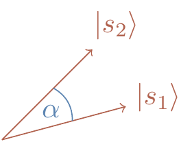

Chapter 4 Measurements
About the Hilbert-space formalism of quantum theory, and the role of measurements in quantum information theory, as well as introducing the quantum dramas of Alice and Bob.
Eventually, we have to talk about quantum measurements, since, at some point, someone has to look at a measuring device and register the outcome of whatever quantum circuits we’ve been designing. It turns out that this is a bit more tricky than one might think. Quantum measurement is not a passive acquisition of information: if you measure, you disturb. Even though it is a physical process, like any other quantum evolution, it is traditionally described by a different set of mathematical tools.
4.1 Hilbert spaces, briefly
A formal mathematical setting for a quantum system is that of a Hilbert space \(\mathcal{H}\), i.e. a vector space with an inner product. The result of any preparation of a system is represented by some unit vector \(|\psi\rangle\in \mathcal{H}\), and any test is represented by some other unit vector \(|e\rangle\in \mathcal{H}\).58 The inner product of these two vectors, \(\langle e|\psi\rangle\), gives the probability amplitude that an object prepared in state \(|\psi\rangle\) will pass a test for being in state \(|e\rangle\). Probabilities are obtained by squaring absolute values of probability amplitudes: \[ |\langle e|\psi\rangle|^2 = \langle\psi|e\rangle\langle e|\psi\rangle. \] After the test, in which the object was found to be in state \(|e\rangle\), say, the object forgets about its previous state \(|\psi\rangle\) and is, indeed, actually now in state \(|e\rangle\). This is the mysterious quantum collapse which we will briefly discuss later on.
A more complete test involves multiple states \(e_k\) that form an orthonormal basis \(\{|e_1\rangle,\ldots,|e_n\rangle\}\). These states are perfectly distinguishable from each other: the condition \(\langle e_k|e_l\rangle = \delta_{kl}\) implies that a quantum system prepared in state \(|e_l\rangle\) will never be found in state \(|e_k\rangle\) (unless \(k=l\)). The probability amplitude that the system in state \(|\psi\rangle\) will be found in state \(|e_k\rangle\) is \(\langle e_k|\psi\rangle\) and, given that the vectors \(|e_k\rangle\) span the whole vector space, the system will be always found in one of the basis states, whence \[ \sum_k |\langle e_k|\psi\rangle|^2 = 1. \] As a result:
A complete measurement in quantum theory is determined by the choice of an orthonormal basis \(\{|e_i\rangle\}\) in \(\mathcal{H}\), and every such basis (in principle) represents a possible complete measurement.
4.2 Back to qubits; complete measurements
A projector is any Hermitian operator \(P=P^\dagger\) which is idempotent (\(P^2=P\)). The rank of \(P\) is evaluated using \(\operatorname{tr}(P)\). In the Dirac notation, \(|e\rangle\langle e|\) is a rank one projector on the subspace spanned by the unit vector \(|e\rangle\), and it acts on any vector \(|v\rangle\) as \((|e\rangle\langle e|)|v\rangle = |e\rangle\langle e|v\rangle\).
The most common measurement in quantum information science is the standard measurement on a qubit, also referred to as the measurement in the standard (or computational) basis \(\{|0\rangle,|1\rangle\}\). When we draw circuit diagrams it is tacitly assumed that such a measurement is performed on each qubit at the end of quantum evolution.

Figure 4.1: The standard (computational) basis defines the standard measurements.
However, if we want to emphasise the role of the measurement, then we can include it explicitly in the diagram as a special quantum gate, e.g. as

or, in an alternative notation, as

As we can see, if the qubit is prepared in state \(|\psi\rangle = \alpha_0|0\rangle + \alpha_1|1\rangle\) and subsequently measured in the standard basis state, then the outcome is \(|k\rangle\) (for \(k=0,1\)) with probability59 \[ \begin{aligned} |\alpha_k|^2 &= |\langle k|\psi\rangle|^2 \\&= \underbrace{\langle\psi|k\rangle}_{\alpha_k^\star} \underbrace{\langle k|\psi\rangle}_{\alpha_k} \\&= \langle\psi| \underbrace{|k\rangle\langle k|}_{\text{projector}} |\psi\rangle \\&= \langle\psi|P_k|\psi\rangle \end{aligned} \] where \(P_k=|k\rangle\langle k|\) is the projector on \(|k\rangle\). If the outcome of the measurement is \(k\), then the output state of the measurement gate is \(|k\rangle\). The original state \(|\psi\rangle\) is irretrievably lost. This sudden change of the state, from the pre-measurement state \(|\psi\rangle\) to the post-measurement state, either \(|0\rangle\) or \(|1\rangle\), is often called a collapse or a reduction of the state.
So it looks like there are two distinct ways for a quantum state to change: on the one hand we have unitary evolutions, and on the other hand we have an abrupt change during the measurement process. Surely, the measurement process is not governed by any different laws of physics?
No, it is not!
A measurement is a physical process and can be explained without any “collapse”, but it is usually a complicated process in which one complex system (a measuring apparatus or an observer) interacts and gets correlated with a physical system being measured. We will discuss this more later on, but for now let us accept a “collapse” as a convenient mathematical shortcut, and describe it in terms of projectors rather than unitary operators.
4.3 The projection rule; incomplete measurements
So far we have identified measurements with orthonormal bases, or, if you wish, with a set of orthonormal projectors on the basis vectors.
- The orthonormality condition: \[ \langle e_k|e_l\rangle = \delta_{kl} \] i.e. the basis consists of unit vectors that are pairwise orthogonal.
- The completeness condition: \[ \sum_k|e_k\rangle\langle e_k| = \mathbf{1} \] i.e. any vector in \(\mathcal{H}\) can be expressed as the sum of orthogonal projections on \(|e_k\rangle\).
Given a quantum system in state \(|\psi\rangle\) such that \(|\psi\rangle = \sum_k \alpha_k|e_k\rangle\), we can write \[ \begin{aligned} |\psi\rangle &= \mathbf{1}|\psi\rangle \\&= \sum_k |e_k\rangle\langle e_k| |\psi\rangle \\&= \sum_k |e_k\rangle\langle e_k|\psi\rangle \\&= \sum_k |e_k\rangle\alpha_k \\&= \sum_k \alpha_k|e_k\rangle. \end{aligned} \] This says that the measurement in the basis \(\{|e_i\rangle\}\) gives the outcome labelled by \(e_k\) with probability \[ |\langle e_k|\psi\rangle|^2 = \langle\psi|e_k\rangle\langle e_k|\psi\rangle \] and leaves the system in state \(|e_k\rangle\). This is a complete measurement, which represents the best we can do in terms of resolving state vectors in the basis states. But sometimes we do not want our measurement to distinguish all the elements of an orthonormal basis.
For example, a complete measurement in a four-dimensional Hilbert space will have four distinct outcomes: \(|e_1\rangle\), \(|e_2\rangle\), \(|e_3\rangle\), and \(|e_4\rangle\), but we may want to lump together some of the outcomes and distinguish, say, only between \(\{|e_1\rangle\), \(|e_2\rangle\}\), and \(\{|e_3\rangle,|e_4\rangle\}\). In other words, we might be trying to distinguish one subspace from another, without separating vectors that lie in the same subspace. Such measurements (said to be incomplete) are indeed possible, and they can be less disruptive than the complete measurements.
Intuitively, an incomplete measurement has fewer outcomes and is hence less informative, but the state after such a measurement is usually less disturbed.
In general, instead of projecting on one dimensional subspaces spanned by vectors from an orthonormal basis, we can decompose our Hilbert space into mutually orthogonal subspaces of various dimensions and project on them.
- The orthogonality conditions for projectors: \[ P_k P_l = P_k\delta_{kl} \]
- The projector decomposition of the identity: \[ \sum_k P_k = \mathbf{1} \]
For any decomposition of the identity into orthogonal projectors \(P_k\), there exists a measurement that takes a quantum system in state \(|\psi\rangle\), outputs label \(k\) with probability \(\langle\psi|P_k|\psi\rangle\), and leaves the system in the state \(P_k|\psi\rangle\) (multiplied by the normalisation factor, i.e. divided by the length of \(P_k|\psi\rangle\)): \[ |\psi\rangle \mapsto \frac{P_k|\psi\rangle}{\sqrt{\langle\psi|P_k|\psi\rangle}}. \]
4.4 Example of an incomplete measurement
Consider a three-dimensional Hilbert space \(\mathcal{H}\), and the two orthogonal projectors \[ \begin{aligned} P &= |e_1\rangle\langle e_1| + |e_2\rangle\langle e_2| \\Q &= |e_3\rangle\langle e_3| \end{aligned} \] that form the decomposition of the identity: \(P+Q=\mathbf{1}\). Suppose that a physical system is prepared in state \(|\psi\rangle = \alpha_1|e_1\rangle + \alpha_2|e_2\rangle + \alpha_3|e_3\rangle\). Ideally, we would like to perform a complete measurement that would resolve the state \(|v\rangle\) into the three basis states, but suppose our experimental apparatus is not good enough, and lumps together \(|e_1\rangle\) and \(|e_2\rangle\). In other words, it can only differentiate between the two subspaces associated with projectors \(P\) and \(Q\).
The apparatus, in this incomplete measurement, may find the system in the subspace associated with \(P\). This happens with probability \[ \begin{aligned} \langle\psi|P|\psi\rangle &= \langle\psi|e_1\rangle \langle e_1|\psi\rangle + \langle\psi|e_2\rangle \langle e_2|\psi\rangle \\&= |\alpha_1|^2 + |\alpha_2|^2, \end{aligned} \] and the state right after the measurement is the normalised vector \(P|\psi\rangle\), i.e. \[ \frac{\alpha_1|e_1\rangle+\alpha_2|e_2\rangle}{\sqrt{|\alpha_1|^2 + |\alpha_2|^2}}. \]
The measurement may also find the system in the subspace associated with \(Q\) with the probability \(\langle\psi|Q|\psi\rangle = |\alpha_3|^2\), resulting in the post-measurement state \(|e_3\rangle\).

4.5 Observables
An observable \(A\) is a measurable physical property which has a numerical value, for example, spin or momentum or energy. The term “observable” also extends to any basic measurement in which each outcome is associated with a numerical value. If \(\lambda_k\) is the numerical value associated with outcome \(|e_k\rangle\) then we say that the observable \(A\) is represented by the operator \[ \begin{aligned} A &= \sum_k \lambda_k |e_k\rangle\langle e_k| \\&= \sum_k \lambda_k P_k, \end{aligned} \] where \(\lambda_k\) is now the eigenvalue corresponding to the eigenvector \(|e_k\rangle\), or the projector \(P_k\).
Recall the following types of operator:
| normal | \(AA^\dagger = A^\dagger A\) |
| unitary | \(AA^\dagger = A^\dagger A = \mathbf{1}\) |
| Hermitian, or self-adjoint | \(A^\dagger = A\) |
| positive semi-definite | \(\langle v|A|v\rangle\geqslant 0\) for all \(|v\rangle\) |
Note that an operator \(A\) is normal if and only if it is unitarily diagonalisable, and that both unitary and Hermitian operators are normal.
Conversely, to any normal operator \(A\) we can associate a measurement defined by the eigenvectors of \(A\), which form an orthonormal basis, and use the eigenvalues of \(A\) to label the outcomes of this measurement. If we choose the eigenvalues to be real numbers then \(A\) becomes a Hermitian operator. For example, the standard measurement on a single qubit is often called the \(Z\)-measurement, because the Pauli \(Z\) operator can be diagonalised in the standard basis and written as \(Z = (+1)|0\rangle\langle 0| + (-1)|1\rangle\langle 1|\). The two outcomes, \(|0\rangle\) and \(|1\rangle\), are now labelled as \(+1\) and \(-1\), respectively. Using the same association we also have the \(X\)- and the \(Y\)-measurements, defined by the Pauli \(X\) and \(Y\) operators, respectively.
Let us mention in passing that many textbooks describe observables in terms of Hermitian operators and claim that the corresponding operators have to be Hermitian “because the outcomes are real numbers”. This is misleading, since:
The outcomes can be labelled by any symbols of your choice; it is the decomposition of the Hilbert space into mutually orthogonal subspaces that defines a measurement, not the labels.
This said, labelling outcomes with real numbers is very useful. For example, the expected value \(\langle A\rangle\), which is the average of the numerical values \(\lambda_k\) weighted by their probabilities, is a very useful quantity and can be easily expressed in terms of the operator \(A\) as \(\langle\psi|A|\psi\rangle\), as follows: \[ \begin{aligned} \sum_k \lambda_k \Pr (\text{outcome k}) &= \sum_k \lambda_k |\langle e_k|\psi\rangle|^2 \\&= \sum_k\lambda_k \langle\psi|e_k\rangle\langle e_k|\psi\rangle \\&= \langle\psi| \left( \sum_k\lambda_k|e_k\rangle\langle e_k| \right)|\psi\rangle \\&= \langle\psi|A|\psi\rangle. \end{aligned} \] To be clear, this is not a value we expect to see in any particular experiment. Instead, imagine a huge number of quantum objects, all prepared in the state \(|\psi\rangle\) and think about the observable \(A\) being measured on each of the objects. Statistically we then expect the average of our measurement results to be roughly \(\langle A\rangle\). Note that when \(A\) is a projector then \(\langle\psi|A|\psi\rangle\) is the probability of the outcome associated with \(A\).
4.6 Compatible observables and the uncertainty relation
!!!TODO!!!
4.7 Quantum communication
Now is a good moment to introduce Alice and Bob (not their real names): our two protagonists who always need to communicate with each other. These two play the major role in many communication dramas, though they remain rather lacking in character development.
This time Alice is sending quantum states to Bob, and Bob does his best to identify them correctly by choosing appropriate measurements. Let us start we a simple observation: if a quantum state of the carrier of information is described by a state vector in a \(2^n\)-dimensional Hilbert space, then the carrier can carry at most \(n\) bits of information. For example, Alice can choose one of the \(2^n\) states from a pre-agreed orthonormal basis \(\{|e_k\rangle\}\), and Bob will be able to distinguish them reliably by choosing the \(\{|e_k\rangle\}\) basis for his measurement.
But can Alice and Bob do better than that? Can Alice send more than \(n\) bits of information per carrier by encoding them in states \(|s_1\rangle,\ldots,|s_N\rangle\) where \(N \geqslant 2^n\)? Can Bob choose a clever measurement and reliably distinguish between all such states?
The answer is no.
4.8 Basic quantum coding and decoding
Suppose Alice randomly chooses one of the pre-agreed \(N\) signal states \(|s_k\rangle\) and sends it to Bob, who tries to identify the signal states by performing a measurement defined by the projectors \(P_l\). Let \(P\) be a projector on a subspace spanned by the signal states \(|e_k\rangle\), i.e. \(P|s_k\rangle = |s_k\rangle\). The dimension \(d\) of this subspace is given by \(d = \operatorname{tr}P\). We shall assume, without any loss of generality, that Bob designed his measurement in such a way that, whenever he gets outcome \(P_k\), he concludes that Alice sent state \(|s_k\rangle\). His probability of success is given by \[ \Pr(\mbox{success}) = \frac{1}{N} \sum_k \langle s_k|P_k|s_k\rangle \] which is the probability that signal state \(|s_k\rangle\) is selected (here equal to \(1/N\), since all the signal states are equally likely) times the probability that the selected signal state is correctly identified by Bob (which is \(\langle s_k|P_k|s_k\rangle\)), and we sum over all signal states.
We have the following trace identities:
- \(\operatorname{tr}(ABC) = \operatorname{tr}(BCA) = \operatorname{tr}(CAB)\)
- \(\operatorname{tr}|a\rangle\langle b| = \langle b|a\rangle\)
- \(\operatorname{tr}|a\rangle\langle b| = \langle b|A|a\rangle\)
- \(\operatorname{tr}BP \leqslant\operatorname{tr}B\) for any positive semi-definite \(B\) and projector \(P\).
To prove this last identity, consider the projector \(Q=\mathbf{1}-P\), and note that \[ \begin{aligned} \operatorname{tr}B &= \operatorname{tr}B(P+Q) \\&= \operatorname{tr}BP + \operatorname{tr}BQ \end{aligned} \] and that \(\operatorname{tr}BQ\) is non-negative.
Let us use this case to practice some of the trace identities. It is often convenient to write expressions such as \(\langle\psi|A|\psi\rangle\) in terms of the trace: for any vector \(|\psi\rangle\) and operator \(A\) we have \[ \begin{aligned} \langle\psi|A|\psi\rangle &= \operatorname{tr}(A|\psi\rangle\langle\psi|) \\&= \operatorname{tr}(|\psi\rangle\langle\psi| A). \end{aligned} \] In our case, \[ \begin{aligned} \Pr(\mbox{success}) &= \frac{1}{N} \sum_k \langle s_k|P_k|s_k\rangle \\&= \frac{1}{N} \sum_k \langle s_k|PP_kP|s_k\rangle \\&= \frac{1}{N} \sum_k \operatorname{tr}(PP_kP) |s_k\rangle\langle s_k| \end{aligned} \] where we have also used that \(P|s_k\rangle=|s_k\rangle\). Let us bound this expression above by using the trace identities: \[ \begin{aligned} \frac{1}{N} \sum_k \operatorname{tr}(PP_kP) |s_k\rangle\langle s_k| &\leqslant\frac{1}{N} \sum_k \operatorname{tr}(PP_kP) \\&= \frac{1}{N} \sum_k \operatorname{tr}\left( P\left( \sum_k P_k \right) P \right) \\&= \frac{1}{N} \sum_k \operatorname{tr}(P\mathbf{1}P) \\&= \frac{d}{N} \end{aligned} \]
So if Alice encodes \(N\) equally likely messages as states in a quantum system that, mathematically speaking, lives in the Hilbert space of dimension \(d\), and if Bob decodes by performing a measurement and inferring the message from the result, then Bob’s probability of success is bounded by \(\frac{d}{N}\). If the number \(N\) of possible signals exceeds the dimension \(d\), then Bob will not be able to reliably distinguish between the signals by any measurement. In particular:
One qubit can store and carry at most one bit of information that can reliably be read by a measurement.
4.9 Distinguishability of non-orthogonal states
We have already mentioned that non-orthogonal states cannot be reliably distinguished, and now it is time to make this statement more precise. Suppose Alice sends Bob a message by choosing one of the two non-orthogonal states \(|s_1\rangle\) and \(|s_2\rangle\), where both are equally likely to be chosen. What is the probability that Bob will decode the message correctly and what is the best (i.e. the one that maximises this probability) measurement? As a general rule, before you embark on any calculations, check for symmetries, special cases, and anything that may help you to visualise the problem and make intelligent guesses about the solution. One of the most powerful research tools is a good guess. In fact, this is what real research is about: educated guesses that guide your calculations. In this particular case you can use symmetry arguments to guess the optimal measurement — see Figure 4.2. Once you have guessed the answer, you might as well do the calculations.

Figure 4.2: The optimal measurement to distinguish between the two equally likely non-orthogonal signal states \(|s_1\rangle\) and \(|s_2\rangle\) is described by the two orthogonal vectors \(|d_1\rangle\) and \(|d_2\rangle\) placed symmetrically around the signal states.
Suppose Bob’s measurement is described by projectors \(P_1\) and \(P_2\), with the inference rule “\(P_1\) implies \(|s_1\rangle\); \(P_2\) implies \(|s_2\rangle\)”. Then \[ \begin{aligned} \Pr(\mbox{success}) &= \frac12\left( \langle s_1|P_1|s_1\rangle + \langle s_2|P_2|s_2\rangle \right) \\&= \frac12\left( \operatorname{tr}P_1|s_1\rangle\langle s_1| + \operatorname{tr}P_2|s_2\rangle\langle s_2| \right) \\&= \frac12\left( \operatorname{tr}P_1|s_1\rangle\langle s_1| + \operatorname{tr}(\mathbf{1}-P_1)|s_2\rangle\langle s_2| \right) \\&= \frac12\left( 1 + \operatorname{tr}P_1\left( |s_1\rangle\langle s_1| - |s_2\rangle\langle s_2| \right) \right). \end{aligned} \] Let us look at the operator \(D = |s_1\rangle\langle s_1| - |s_2\rangle\langle s_2|\) that appears in the last expression. This operator acts on the subspace spanned by \(|s_1\rangle\) and \(|s_2\rangle\); it is Hermitian; the sum of its two (real) eigenvalues is zero; and \(\operatorname{tr}D=\langle s_1\rangle{s_1}-\langle s_2\rangle{s_2}=0\). Let us write \(D\) as \(\lambda(|d_+\rangle\langle d_+| - |d_-\rangle\langle d_-|)\), where \(|d_\pm\rangle\) are the two orthonormal eigenstates of \(D\), and \(\pm\lambda\) are the corresponding eigenvalues. Now we write \[ \begin{aligned} \Pr (\mbox{success}) &= \frac12\left( 1 + \lambda\operatorname{tr}P_1\left( |d_+\rangle\langle d_+|-|d_-\rangle\langle d_-| \right) \right) \\&\leqslant\frac12\left( 1+\lambda \langle d_+|P_1|d_+\rangle \right) \end{aligned} \] where we have dropped the non-negative term \(\operatorname{tr}P_1|d_-\rangle\!\langle d_-|\). In fact, it is easy to see that we will maximise the expression above by choosing \(P_1 = |d_+\rangle\langle d_+|\) (and \(P_2 = |d_-\rangle\langle d_-|\)). The probability of success is then bounded by \(\frac12(1+\lambda)\). All we have to do now is to find the positive eigenvalue \(\lambda\) for the operator \(D\). We can do this, of course, by solving the characteristic equation for a matrix representation of \(D\), but, as we are now practising the trace operations, we can also notice that \(\operatorname{tr}D^2 = 2\lambda^2\), and then evaluate the trace of \(D^2\). We use the trace identities and obtain \[ \begin{aligned} \operatorname{tr}D^2 &= \operatorname{tr}\left( |s_1\rangle\langle s_1|-|s_2\rangle\langle s_2| \right) \left( |s_1\rangle\langle s_1|-|s_2\rangle\langle s_2| \right) \\&= 2-2|\langle s_1|s_2\rangle|^2 \end{aligned} \] which gives \(\lambda = \sqrt{1-|\langle s_1|s_2\rangle|^2}\). Bringing it all together we have the final expression: \[ \Pr (\mbox{success}) = \frac12\left( 1+ \sqrt{1-|\langle s_1|s_2\rangle|^2} \right). \]
We can parametrise \(|\langle s_1|s_2\rangle| = \cos\alpha\), and interpret \(\alpha\) as the angle between \(|s_1\rangle\) and \(|s_2\rangle\).

This allows us to express our findings in a clearer way: given two equally likely states, \(|s_1\rangle\) and \(|s_2\rangle\), such that \(|\langle s_1|s_2\rangle| = \cos\alpha\), the probability of correctly identifying the state by a projective measurement is bounded by \[ \Pr (\mbox{success}) = \frac12(1 + \sin\alpha), \] and the optimal measurement that achieves this bound is determined by the eigenvectors of \(D = |s_1\rangle\langle s_1|-|s_2\rangle\langle s_2|\) (try to visualise these eigenvectors).
It makes sense, right? If we try just guessing the state, without any measurement, then we expect \(\Pr (\mbox{success}) = \frac12\). This is our lower bound, and in any attempt to distinguish the two states we should do better than that. If the two signal states are very close to each other then \(\sin\alpha\) is small and we are slightly better off than guessing. As we increase \(\alpha\), the two states become more distinguishable, and, as we can see from the formula, when the two states become orthogonal they also become completely distinguishable.
4.10 Wiesner’s quantum money
!!!TODO!!!
4.11 Exercises
Consider two unit vectors \(|a\rangle\) and \(|b\rangle\). Is \(|a\rangle\langle a|+|b\rangle\langle b|\) a projector? 2.Suppose you are given a single qubit in some unknown quantum state \(|\psi\rangle\). Can you determine \(|\psi\rangle\)?
You measure a random qubit in the standard basis and register \(|0\rangle\). What does it tell you about the pre-measurement state \(|\psi\rangle\)?
How many real parameters do you need to determine \(|\psi\rangle\)? Would you be able to reconstruct \(|\psi\rangle\) from \(\langle\psi|X|\psi\rangle\), \(\langle\psi|Y|\psi\rangle\), and \(\langle\psi|Z|\psi\rangle\)? (It may help you to visualise \(|\psi\rangle\) as a Bloch vector).
You are given zillions of qubits, all prepared in the same quantum state \(|\psi\rangle\). How would you determine \(|\psi\rangle\)?
The \(Z\) measurement is defined by the projectors \[ \begin{aligned} P_0 &= \frac12(\mathbf{1}+ Z), \\P_1 &= \frac12(\mathbf{1}- Z). \end{aligned} \] Consider the measurement associated to some Hermitian operator \(S\) that satisfies \(S^2=\mathbf{1}\). Show that the two outcomes \(\pm 1\) correspond to the projectors \(\frac12(\mathbf{1}\pm S)\).
In our quantum circuits, unless specified otherwise, all measurements are assumed to be performed in the standard basis. This is because any measurement can be reduced to the standard measurement by performing some prior unitary transformation. Show that any two orthonormal bases \(\{|e_k\rangle\}\) and \(\{|d_l\rangle\}\) are always related by some unitary \(U\) (i.e. show that \(\sum_k |d_k\rangle\langle e_k|\) is unitary).
Suppose projectors \(P_k\) define the standard measurement, and show that for any unitary \(U\) projectors \(UP_kU^\dagger\) also define a measurement.

- The optimal measurement to distinguish between the two equally likely non-orthogonal signal states, \(|s_1\rangle\) and \(|s_2\rangle\), is described by the two orthogonal vectors \(|d_1\rangle\) and \(|d_2\rangle\), placed symmetrically around the signal states. But suppose the states are not equally likely: say \(|s_1\rangle\) is chosen with probability \(p_1\) and \(|s_2\rangle\) with probability \(p_2\). How would you modify the measurement to maximise the probability of success in this case?

- (How to ascertain the values of \(\sigma_x\) and \(\sigma_y\) of a qubit).60 Alice prepares a qubit in any state of her choosing and gives it to Bob, who secretly measures either \(\sigma_x\) or \(\sigma_y\). The outcome of the measurement is seen only by Bob. Alice has no clue which measurement was chosen by Bob, but right after his measurement she gets her qubit back and she can measure it as well. Some time later, Bob tells Alice which of the two measurements was chosen, i.e. whether he measured \(\sigma_x\) or \(\sigma_y\). Alice then tells him the outcome he obtained in his measurement. Bob is surprised, since the two measurements have mutually unbiased bases and yet Alice always gets it right. How does she do it?
- (Zeno effect). !!!TODO!!!
4.12 Quantum theory, formally
Even though multiplying and adding probability amplitudes is essentially all there is to quantum theory, we hardly ever multiply and add amplitudes in a pedestrian way. Instead, as we have seen, we neatly tabulate the amplitudes into vectors and matrices and let the matrix multiplication take care of multiplication and addition of amplitudes corresponding to different alternatives. Thus vectors and matrices appear naturally as our bookkeeping tools: we use vectors to describe quantum states, and matrices (operators) to describe quantum evolutions and measurements. This leads to a convenient mathematical setting for quantum theory, which is a complex vector space with an inner product, often referred to as a Hilbert space. It turns out, somewhat miraculously, that this pure mathematical construct is exactly what we need to formalise quantum theory. It gives us a precise language which is appropriate for making empirically testable predictions. At a very instrumental level, quantum theory is a set of rules designed to answer questions such as “given a specific preparation and a subsequent evolution, how can we compute probabilities for the outcomes of such-and-such measurement”. Here is how we represent preparations, evolutions and measurements in mathematical terms, and how we get probabilities.
Note that we have already said much of the below, but we are summarising it again now in a more precise way, formally defining the mathematical framework of quantum theory that we use.
We also need to point out that a vital part of the formalism of quantum theory is missing from the following description, namely the idea of tensor products. To talk about this, we need to introduce the notion of entanglement, and this will be the subject of Chapter 5.
4.12.1 Quantum states
With any isolated quantum system which can be prepared in \(n\) perfectly distinguishable states, we can associate a Hilbert space \(\mathcal{H}\) of dimension \(n\) such that each vector \(|v\rangle\in\mathcal{H}\) of unit length (\(\langle v|v\rangle =1\)) represents a quantum state of the system. The overall phase of the vector has no physical significance: \(|v\rangle\) and \(e^{i\varphi}|v\rangle\), for any real \(\varphi\), describe the same state. The inner product \(\langle u|v\rangle\) is the probability amplitude that a quantum system prepared in state \(|v\rangle\) will be found in state \(|u\rangle\). States corresponding to orthogonal vectors, \(\langle u|v\rangle=0\), are perfectly distinguishable, since the system prepared in state \(|v\rangle\) will never be found in state \(|u\rangle\), and vice versa. In particular, states forming orthonormal bases are always perfectly distinguishable from each other.
4.12.2 Quantum evolutions
Any physically admissible evolution of an isolated quantum system is represented by a unitary operator.
Unitary operators describing evolutions of quantum systems are usually derived from the Schrödinger equation.61 \[ \frac{\mathrm{d}}{\mathrm{d}t} |\psi(t)\rangle = -\frac{i}{\hbar} H |\psi(t)\rangle \] where \(H\) is a Hermitian operator called the Hamiltonian.
This equation contains a complete specification of all interactions both within the system and between the system and the external potentials. For time independent Hamiltonians, the formal solution of the Schrödinger equation reads \[ \begin{gathered} |\psi(t)\rangle = U(t) |\psi(0)\rangle \\\mbox{where}\qquad U(t) = e^{-\frac{i}{\hbar}Ht}. \end{gathered} \] Any unitary matrix can be represented62 as the exponential of some Hermitian matrix \(H\) and some real coefficient \(t\) \[ \begin{aligned} e^{i t H} &\equiv \mathbf{1}+ itH + \frac{(it)^2}{2}H^2 + \frac{(it)^3}{2\cdot3}H^3 +\ldots \\&= \sum_{n=0}^\infty \frac{(it)^n}{n!}H^n. \end{aligned} \] The state vector changes smoothly: for \(t=0\) the time evolution operator is merely the unit operator \(\mathbf{1}\), and when \(t\) is very small \(U(t)\approx \mathbf{1}-itH\) is close to the unit operator, differing from it by something of order \(t\).
4.12.3 Quantum circuits
In this course we will hardly refer to the Schrödinger equation. Instead we will assume that our clever colleagues, experimental physicists, are able to implement certain unitary operations and we will use these unitaries, like lego blocks, to construct other, more complex, unitaries. We refer to preselected elementary quantum operations as quantum logic gates and we often draw diagrams, called quantum circuits, to illustrate how they act on qubits. For example, two unitaries, \(U\) followed by \(V\), acting on a single qubit are represented as

This diagram should be read from left to right, and the horizontal line represents a qubit that is inertly carried from one quantum operation to another.
4.12.4 Measurements
A complete measurement in quantum theory is determined by the choice of an orthonormal basis \(\{|e_i\rangle\}\) in \(\mathcal{H}\), and every such basis (in principle) represents a possible measurement. Given a quantum system in state \(|\psi\rangle\) such that \[ |\psi\rangle = \sum_i |e_i\rangle\langle e_i|\psi\rangle, \] the measurement in the basis \(\{|e_i\rangle\}\) gives the outcome labelled by \(e_k\) with probability \(|\langle e_k\psi\rangle|^2\), and leaves the system in state \(|e_k\rangle\). This is consistent with our interpretation of the inner product \(\langle e_k|\psi\rangle\) as the probability amplitude that a quantum system prepared in state \(|\psi\rangle\) will be found in state \(|e_k\rangle\). State vectors forming orthonormal bases are perfectly distinguishable from each other (\(\langle e_i|e_j\rangle=\delta_{ij}\)), so there is no ambiguity about the outcome. A complete measurement is the best we can do in terms of resolving state vectors in the basis states.
In general, for any decomposition of the identity \(\sum_k P_k=\mathbf{1}\) into orthogonal projectors \(P_k\) (i.e. \(P_kP_l = P_k\delta_{kl}\)), there exists a measurement that takes a quantum system in state \(|\psi\rangle\), outputs label \(k\) with probability \(\langle\psi|P_k|\psi\rangle\), and leaves the system in the state \(P_k|\psi\rangle\) (multiplied by the normalisation factor i.e. divided by the length of \(P_k|\psi\rangle\)): \[ |\psi\rangle \mapsto \frac{P_k|\psi\rangle}{\sqrt{\langle\psi|P_k|\psi\rangle}}. \] The projector formalism covers both complete and incomplete measurements. The complete measurements are defined by rank one projectors, \(P_k=|e_k\rangle\langle e_k|\), projecting on vectors from some orthonormal basis \(\{|e_k\rangle\}\).
The term “Hilbert space” used to be reserved for an infinite-dimensional inner product space that is complete, i.e. such that every Cauchy sequence in the space converges to an element in the space. Nowadays, as in these notes, the term includes finite-dimensional spaces, which automatically satisfy the condition of completeness.↩︎
This slick argument is a good example of how nice the bra-ket notation can be.↩︎
This is a simplified version of a beautiful quantum puzzle proposed in 1987 by Lev Vaidman, Yakir Aharonov, and David Z. Albert in a paper with the somewhat provocative title “How to ascertain the values of \(\sigma_x\), \(\sigma_y\), and \(\sigma_z\) of a spin-\(\frac12\) particle”. For the original, see Phys. Rev. Lett. 58 (1987), 1385.↩︎
Recall our previous discussion of this equation.↩︎
We ignore convergence issues.↩︎